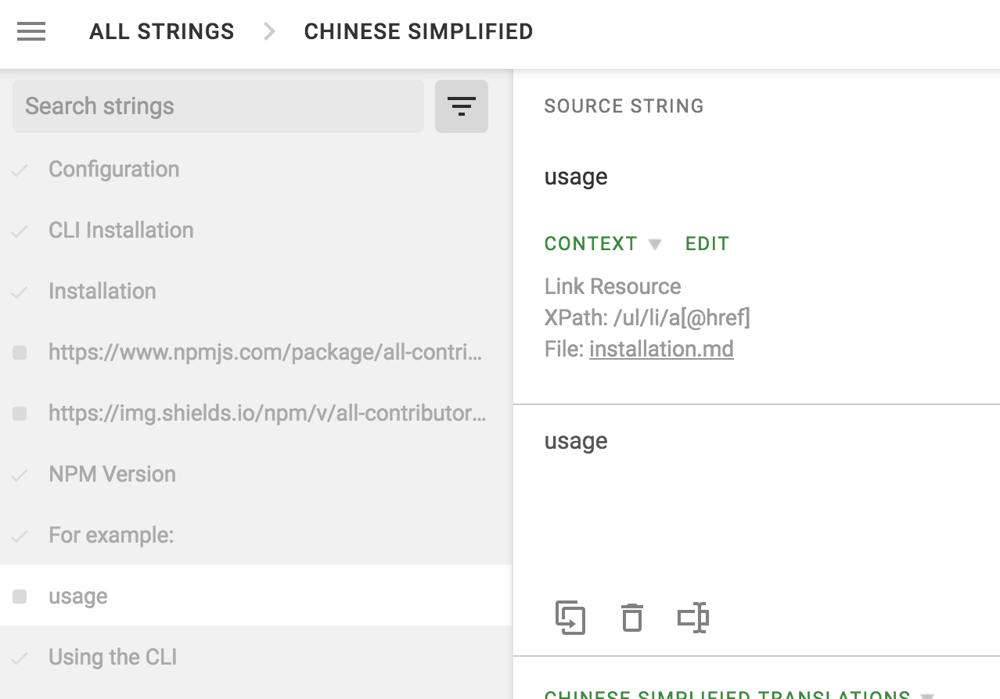

贡献，并且帮助我们改进
呼吁翻译！ 我们正在寻找翻译为所有人做这个规范。
帮助改进all-contributors文档
感谢您参与该项目！ 欢迎任何微如拼写错误、大到添加章节帮助我们提高项目的 Pull Requests.
源代码可在 github.com/all-contributors/all-contributors 中查看。
向 all-contributors 仓库提交 commit
我们使用 Angular commit 惯例 自动生成变更日志，建议您遵循它。 如果你没有使用或者担心提交错误类型的 commit，你可以执行 npm run commit 或者 git cz (如果你安装了 commitizen) 这将会通过几个问题为您生成 commit 。
编辑内容
专业提示：每个页面在顶部都有一个编辑按钮，点击此按钮会直接指向此页面的GitHub源代码。
进入文件后，点击“铅笔”图标可以在文件中轻松编辑。

翻译

我们的翻译是通过crowdin管理。 您可以通过访问这个 crowdin 项目 ，并帮助翻译来做出您的贡献。 如果有需要，评论这个 issue ，让我们知道你在帮助我们或有任何疑问！
在翻译时，重要的一点是任何形如 XPATH
@href,@src的代码都不应该进行翻译。 像code这样的也不应该翻译。 对于链接，这将导致 404 错误。 有关示例, 请参见下图。 然而，我们也推荐贡献有助于让人理解
code标记的翻译， 只要 它没有变更到实际的任何代码，并只会以自然语言的方式理解。
怎样做
登录 Crowdin
- 访问 这个 Crowdin 项目, 然后注册 接着 登录。
- 加入 “All Contributors” 项目并发声吧！
翻译文档
- 访问 这个 Crowdin 项目。
- 点击您想把文档翻译成对应国家语言的国旗。
- 点击任何
*.md类型的未完成翻译的文件 (翻译完右侧会显示 100%) - 在"Enter translation here" 文本域中写上您的翻译 (这个这本域中的内容会对应到上面的"SOURCE STRING" 文本域) 然后点击 "SAVE" 保存翻译。
- 如果某人(包括你自己)提交了一个建议(这应该明显地写在"[LANGUAGE] TRANSLATIONS" 节下) 确认无误后点击 :ballot_box_with_check: 图标批准它.
部署变更
在你翻译出了对应语言后，你可能不会看到明显的变化直到 master 分支被更新，然后成功部署。
搜索
搜索由 algolia 提供，相关配置参考 https://github.com/algolia/docsearch-configs/blob/master/configs/all-contributors.json 。
在本地计算机运行本网站：
All Contributors 使用 Docusaurus 维护文档网站。 详情访问 Docurus 网站
要在本地运行，参照以下步骤: - yarn install - yarn start - 访问 http://localhost:3000 (一旦你进行了修改便会自动刷新)
添加你自己为 Contributor
为了添加自己到贡献者表, 查看机器人使用指令 ;)。